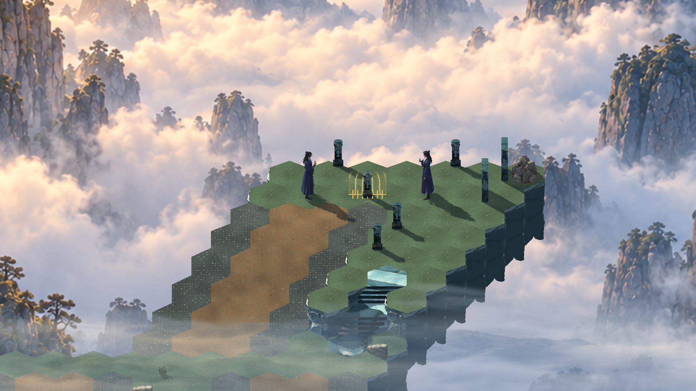
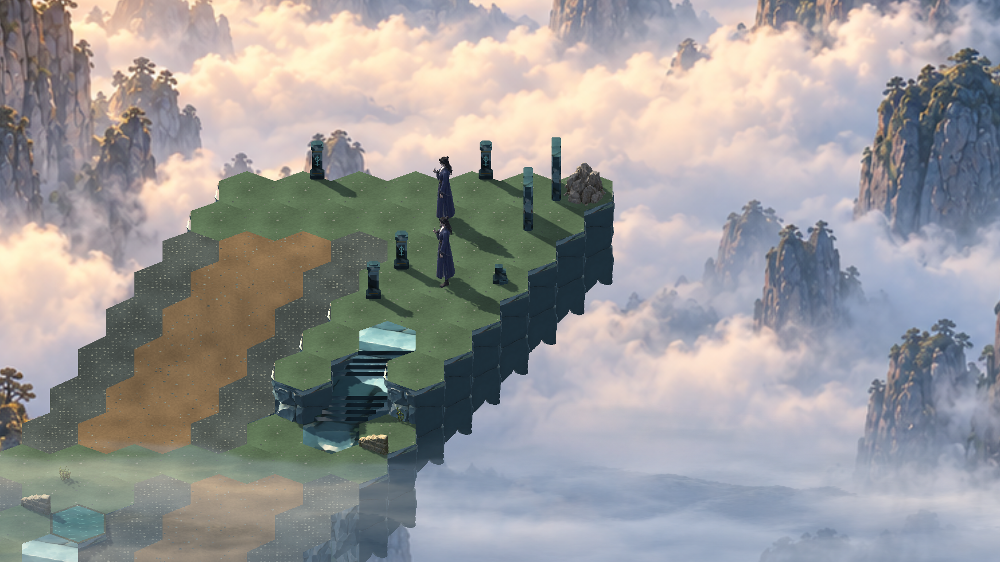
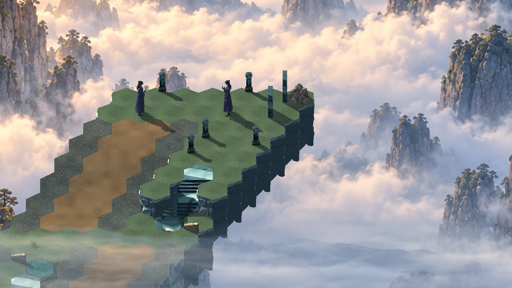
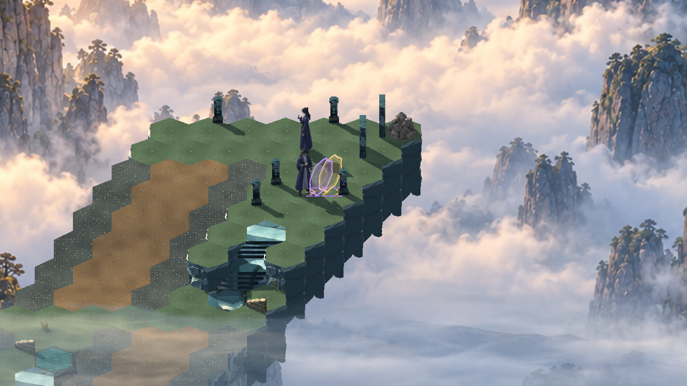
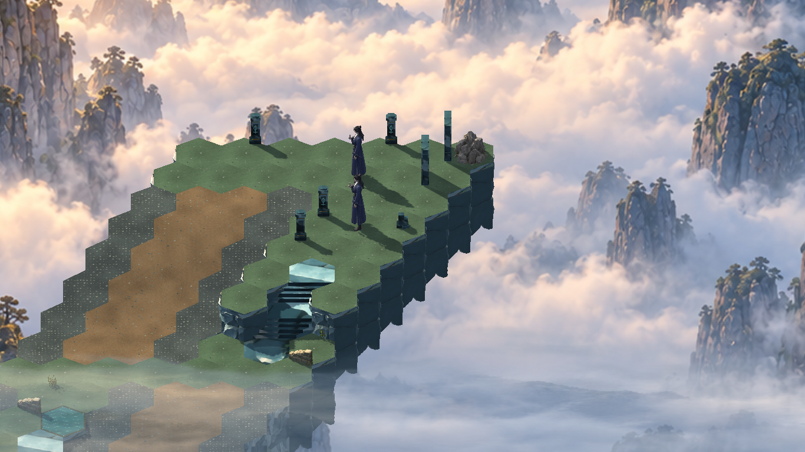
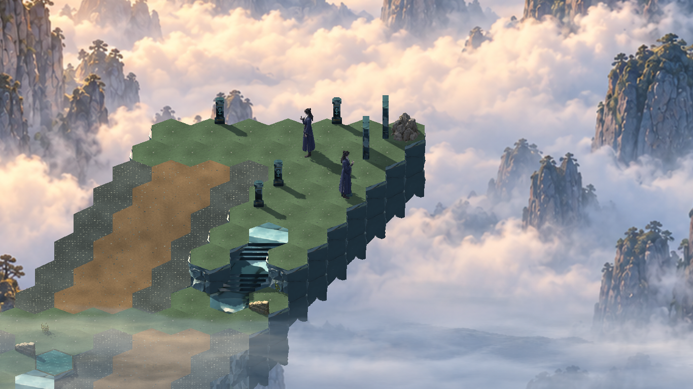

定尺：沿边压缩与拉伸波 · 封关：单向边界、内外能量膜与逐层破坏
2026-11-17 重做 · 默认游戏镜头 size5 · 30fps 原速资源样例
Unity重建保存重开与双分辨率样例运行通过。正式View／V3 HUD尚未接线；旧版证据独立保留。
使用说明与验证范围 · 素材来源
正式地图、角色与真实命令；正式 View 接线及 V3 HUD 试玩仍留集成。局部图案扭曲不读取背景。





